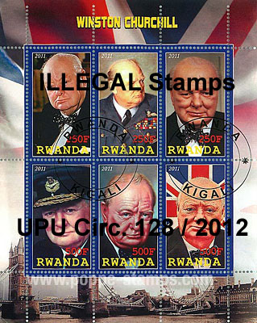
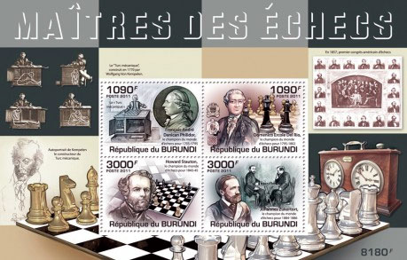
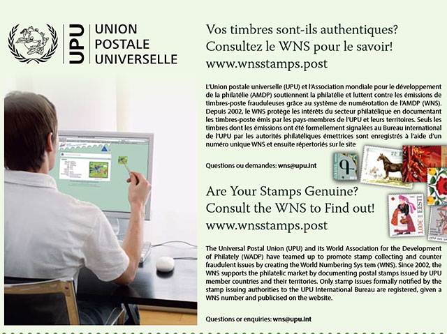
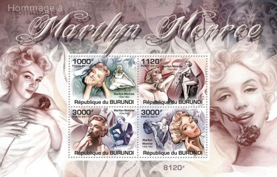

The WNS and the UPU Circulars are not reliable
WHY THE UPU ILLEGAL ISSUES CIRCULARS AND THE WNS DATABASE
CANNOT BE TRUSTED
Summary
The author presents the results of his research of some stamps that are (or apparently are) denounced by the UPU IB Circulars, and uses the WNS as an aid for his research. The results are disappointing.
Let us try together to identify the status of some stamps offered on the Web, by using the UPU Circulars related to illegal stamps and the WNS database.
We will start with the recent UPU Circular #128 / 20 August 2012, Rwanda – Illegal issues.
"The designated operator of Rwanda has recently learned that several illegal postage stamp issues are currently on sale on an Internet site. ...
The designated operator of Rwanda informs its partners that its most recent postage stamps were issued on 15 November 2010 ("Mountain gorilla" and "Arts and culture of Rwanda" series). As the postal operator of Rwanda participates in the WADP Numbering System (WNS), those stamps are visible on the WNS website at www.wnsstamps.ch/en. All issues bearing a date after 15 November 2010 are therefore illegal and should be treated as such." SourceUnlike most of the earlier Circulars, the incriminated stamps are not described at all in this one, but at least we learn that they exist. Therefore the only source for identifying these stamps is the WNS database.
We have easily found on the Web as follows: Poppe Stamps. Rwanda Winston Churchill - 2011.

"Star System ******
Stamp No. 3504646
Stanley Gibbons No. 9999a (! - VM)
Year 2011
Category Personalities Winston Churchill
Country Rwanda
Remarks Winston Churchill Perf These are considered by some as cinderella stamps." (!)
SourceThese stamps are not explicitly listed as illegals by the UPU Circular #128. They are not listed by the WNS either. Therefore, according to the mentioned Circular, because these stamps are not listed by the WNS, they are illegal ones. Well, maybe (read further, please) but for the time being we will take them for illegals and mark them as such.
Now let us travel to another country and to the related UPU circular: Burundi – Illegal issues. UPU Circular #8 / 23 January 2012
"The Ministry of Trade, Industry, Posts and Tourism wishes to inform you again of the existence of several illegal issues being sold online in the name of the Republic of Burundi.
The following is a list of these illegal issues in our possession released in 2009, 2010 and 2011 in the name of our country and being sold on the Internet: Cats, Fauna, African Fauna, Animals of the world, Ferrari, Butterflies, Fish, Dinosaurs, Birds, Male chess masters, Parrots, Submarines, Dogs, Locomotives, Owls, Planes of the world war.
The following illegal issues were also sold on the Internet in 2009 and 2010: Trains, Animaux sauvages, Locomotives.
We should also remind our philatelic partners and UPU member countries that our legal postage stamps issued since 2002 have been registered on the following website www.wnsstamps.ch." SourceOn the Web we easily found some stamps described by the above circular, for example these ones: Stamperija Ltd. Chess Masters - 2011. Source.

The topic of these stamps is explicitly listed by the UPU Circular #128 /2012 as illegals. These stamps are not listed by the WNS. Therefore, according to the mentioned Circular, these stamps are illegal ones.
Right? No, wrong, even if apparently there are two compelling reasons to take them for illegals! According to the relevant sources (*) and (**), cited below in the Addendum, these stamps are legitimate.
Conclusions of our short research
The existing UPU Circulars, that either don't describe the stamps that they denounce or describe them very succinctly, are of little or no use for the identification of illegal stamps.
The WNS database, full of holes as it is after more than 10 years from its start, is of little or no use either
The good question is how can a stamp collectors find out with an reasonable effort which stamps have an illegal status? Well, practically s/he cannot, because the UPU Philately Expert will likely give an answer similar to the one that we received from him in the past ( "Concerning the mentioned case of Chad, we have of course asked to this UPU member country if the Caravaggio sheet was an illegal issue. It never replied to our demand and therefore we can consider that it is not an illegal issue because never denounced by this country.") and the concerned postal administration, if one can find its address, will usually abstain from answering. Please note that it is usually not possible to find out which agency issued a suspect stamp and contact this one.
UPDATE

Can you still believe this?
ADDENDUM

Burundi 2011. Personalities. Marilyn Monroe. Agent: Stamperija Ltd.(*) Burundi Post
E-mail to the PWO7/4/2012
... Ces timbres (Personnalités - VM) sont en vente régulière aux guichets des Postes du Burundi et ont pouvoir d'affranchissement.
Il est vrai que la société "stamperija" est notre agent.NISABWE Christine
chef de service philatélie, Bujumbura-Burundi.Translation from French
... These stamps (Personalities - VM) are regularly available at the postal counters of Burundi and can be used for postage.
It is true that the company "stamperija" is our agent.Christine NISABWE
More information
head of the philately department, Bujumbura-Burundi.
We asked than by e-mail which are actually the stamps denounced by the Circular #8 / 2012 but we haven't received so far (as of Sept 15, 2012) an answer from Ms. NISABWE.(**) Agency Stamperija Ltd.
E-mails to the PWO7/3/2012
"The said issues of Burundi are the legitimate stamps issues, having the right for circulation, bearing the designs which were duly approved by the Burundi Posts and here I have been showing our good will to you by attaching the copies of the documents for your reference.
Stamperija possesses a valid contract with the Burundi Posts and the Royalties have been duly paid for those issues to the Burundi Posts."7/13/2012
"WNS makes no sense when fighting against the illegal stamps because of the following reasons:(1) Even after 10 years of its start, WNS is nearly unknown to the collectors or even stamp-dealers who continue to follow the major reputable stamp catalogs (Michel, Yvert, etc.).
(2) WNS is incomplete for many objective reasons: even many serious countries like Germany or the Netherlands are not in. Many other countries which are listed as participating have their records not updated regularly or promptly enough.
(3) WNS is too expensive (50 CHF per stamp, which is ridiculous for the service of scanning & describing a stamp which takes maximum 5 minutes and must cost maximum 5 CHF even if done in Switzerland) to many poor African countries that's why they do not participate or do not register their stamps even they are officially participating.The (3) reason gives you an answer to your second question (why so many of our agency's stamps are not registered with the WNS). The agents are not paying their represented postal administrations for their invoices of WNS, so the postal administrations from poor african countries cannot (or do not wish to) sustain the participating there. Furthermore we do not recommend them to participate in WNS because of the (1) & (2)."
7/17/2012
"... the illegal stamps are harming our company more than you and anybody else. ... Everybody understands that the illegal stamps will exist until there is sufficient market for them or until those victims-countries become strong & interested in employing Interpol & lawyers in order to prosecute the producers of the illegal stamps world-wide (the latter is unlikely to happen)."ALGIRDAS SATAS
Stamperija LtdWhatever one can think about the Stamperija company, that together with similar agencies floods the philatelic market with an excessive stamp production, detrimental to stamp collecting, we cannot oversee that its manager has a realistic standpoint on the desolate situation of the so-called official fight against the illegal stamp issues. We learn from Mr. Satas why so many postal administrations don't, and probably never won't register most of their stamps with the WNS.
Links to related articles appeared on this site:
- WADP, WNS and the Illegal Postal Stamps. Balance Sheet Ten Years Later
- What is WNS Good For?
- No Help from the UPU
- Nigerian Stamp Sentinel
- Ten Lost WNS Years
|